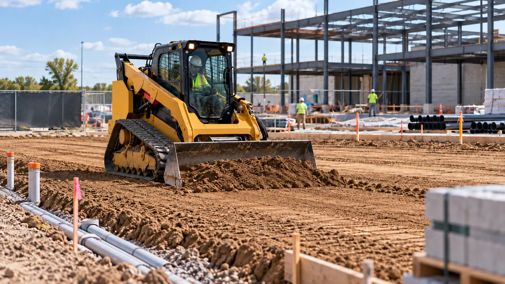
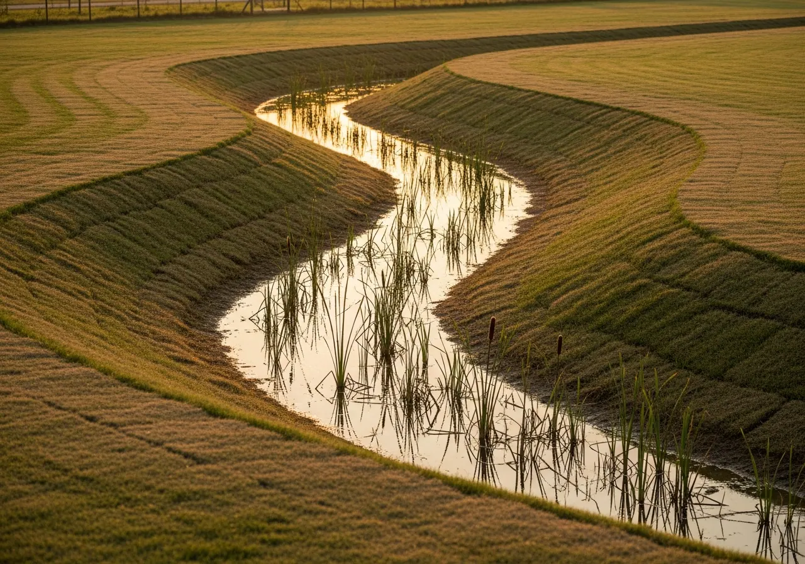
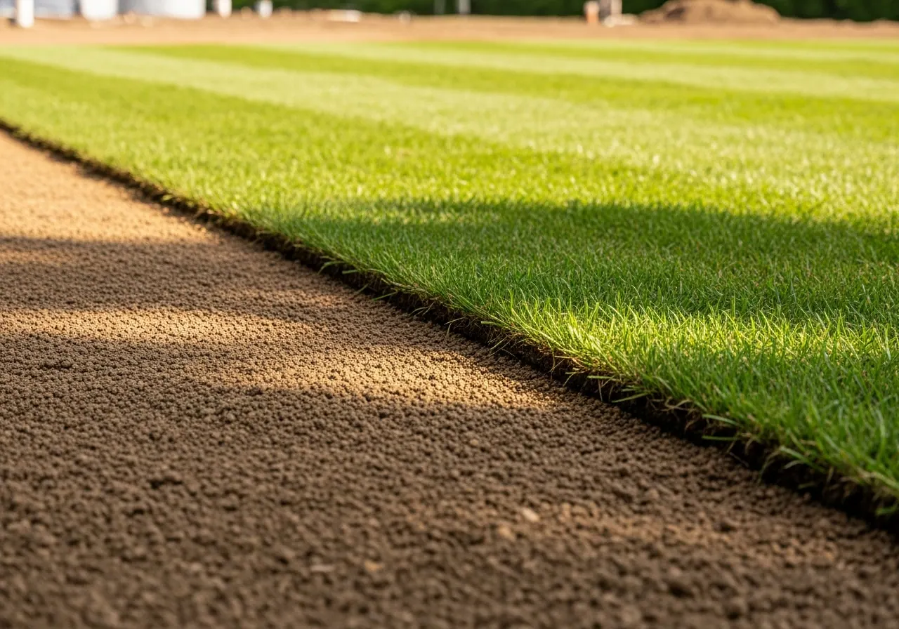

Fine Grading & Site Preparation In the Carolinas
Prepare your ground for construction, improve access, or correct an uneven grade. We handle grading and site preparation for large properties across Upstate SC and greater Charlotte.
Get Your Land Level — And Keep It That Way
An uneven grade can leave water standing, wash soil away, or make turf harder to establish. We'll look at the problem with you and review the plans before shaping the ground.

Grading Services
- Rough grading — initial leveling and shaping after land clearing
- Fine grading — precision finish grade for drainage, turf, or construction
- Regrading — correcting improper or failed grade on existing properties
- Slope grading — creating or correcting slopes for water flow management
- Pad preparation — building pads for structures, equipment storage, or hardscapes
- Access road grading — shaping and grading roads, paths, and driveways on large properties
- Agricultural field leveling — improving drainage and accessibility for farm use
Grading for Drainage
Water follows the slope of the land. When that slope sends runoff toward a building or low spot, regrading may be part of the repair. We consider water movement when shaping slopes, swales, and transitions.

Grading for Turf Establishment
Good turf starts with well-prepared ground. We check the grade, drainage, and soil before planting, then explain the watering and care needed while the grass takes root.

Grading for New Construction
Before foundations, pavement, or utilities go in, the ground needs to match the approved plans. We prepare pads, slopes, drainage routes, and sub-grade with your project team.

Equipment & Precision
We'll confirm equipment access, crew timing, and the required finish before starting the grading work.
Grading & Site Preparation FAQs
What's the difference between rough grading and fine grading?+
Rough grading shapes the land after clearing. Fine grading prepares the finished surface for drainage, turf, or construction. We'll work to the approved plans and confirm the required grades before starting.
Can regrading fix drainage problems on my property?+
Yes, when the slope is part of the problem. We'll look at the ground, drains, and outlets to see whether regrading will help. Some properties also need drainage installation or an engineer's review.
Does P1 grade sites for new construction?+
We prepare building pads, roads, and sites for development across Upstate SC and greater Charlotte. Before starting, we'll review the approved plans, required grades, access, and any specialist work with your project team.
Why does grading matter before installing turf?+
Water needs a way off the ground before new grass goes in. We check grade and drainage alongside soil preparation, grass choice, and the care needed while turf takes root.
Call +1 (704) 221-8928 or request a free estimate online to discuss your grading project.
Explore More With P1
Services Connected to Grading
Plan access, drainage, and new turf alongside grading.
Let's Walk Your Property
Tell us where it is and what's going on. The site visit and written estimate are free.